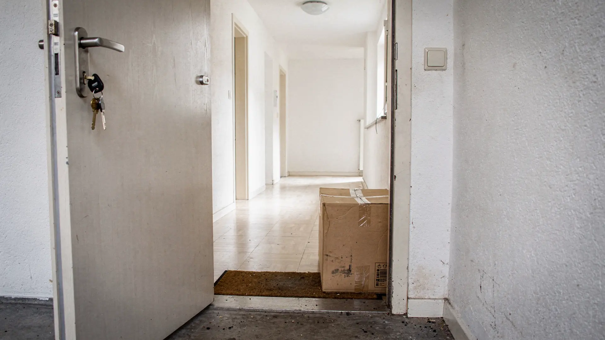

Umzug in Aarau – im Kantonshauptort an der Aare
Aarau ist der Hauptort des Kantons Aargau und liegt an der Aare. ZÜGELKLAR plant Umzüge in, aus und innerhalb von Aarau von der Basis in Mellingen aus – mit schriftlicher Offerte, festem Ansprechpartner und auf Wunsch mit Umzugsreinigung.

SymbolbildAltstadt und Wohnquartiere: unterschiedliche Anforderungen
Aarau hat eine historische Altstadt mit dicht stehenden Häusern. Ältere Gebäude haben oft schmale Treppenhäuser und keinen Lift. Dort entscheidet sich viel an der Frage, welche Möbel zerlegt werden müssen und wie weit das Fahrzeug vom Eingang entfernt steht. Ein Trageweg von grundsätzlich mehr als ca. 15 Metern zwischen Fahrzeug und Hauseingang bedeutet zusätzlichen Aufwand; deshalb fragen wir danach.
Einen Standort in Aarau hat ZÜGELKLAR nicht; für Aufträge in Aarau fährt unser Team von Mellingen aus. In den Wohnquartieren ausserhalb der Altstadt sind Lift und Zufahrt meist einfacher. Dafür kommen bei grösseren Wohnungen oder Häusern Keller und Estrich dazu. Beides klären wir vor der Offerte.
Bei Altbauten prüfen wir vorab auch, ob grosse Möbelstücke überhaupt durch Treppenhaus und Türen passen. Schränke, Betten und Regale werden bei Bedarf demontiert und am neuen Ort wieder aufgebaut. Bei besonders sperrigen Stücken klären wir vorab mit Ihnen, ob ein Transport sinnvoll ist. Schicken Sie uns dafür am besten Fotos des Treppenhauses und der betreffenden Möbel.
Typische Umzüge von und nach Aarau
Als Kantonshauptort ist Aarau für viele ein Arbeits- und Wohnort. Entsprechend verbinden die Umzüge Aarau mit anderen Orten im Aargau und darüber hinaus.
- Umzug innerhalb von Aarau
- Aarau ↔ Lenzburg, Brugg oder Mellingen
- Aarau ↔ Baden oder Raum Zürich
- Umzug mit Möbelmontage in Altbauten ohne Lift
- Umzug und Umzugsreinigung mit Abnahmegarantie kombiniert
Wohnungsabgabe mit Abnahmegarantie
Bei gebuchter Umzugsreinigung mit Abnahmegarantie bessern wir berechtigte Beanstandungen der Verwaltung kostenlos nach – im vereinbarten Leistungsumfang. Die Abgabe sollte grundsätzlich innert drei Arbeitstagen nach der Reinigung stattfinden. Bauliche Schäden, Defekte und normale Abnutzung sind nicht umfasst.
Fotos und Angaben zur Wohnung schicken Sie uns am einfachsten per WhatsApp an 079 933 31 11.
Ob Festpreis oder Stundenpreis passender ist, empfehlen wir Ihnen in der schriftlichen Offerte. Bei einem klar umrissenen Wohnungsumzug gibt ein Festpreis Planungssicherheit, bei kleinen Aufträgen passt oft ein Stundenpreis.
Halteverbot und Parkierung in Aarau
In Aarau ist die Stadtpolizei (Abteilung Sicherheit) zuständig. Die Sektion Stadtpolizei Verkehr kümmert sich laut Stadt um die Signalisation von Strassen und Baustellen und bewirtschaftet die städtischen Parkplätze. Für die Altstadt gilt ein Fahrverbot; Güterumschlag, also Ein- und Ausladen, ist gemäss Altstadtzufahrtsverordnung Montag bis Freitag von 06.00–11.00 und 14.00–17.00 Uhr sowie am Samstag von 06.00–11.00 Uhr erlaubt.
Wer ausserhalb dieser Zeiten in der Altstadt zügeln möchte, erhält laut Stadt Aarau von der Stadtpolizei eine Tagesbewilligung. Vorlaufzeit und Gebühr dafür sind nicht publiziert; klären Sie beides bei der Sektion Stadtpolizei Verkehr. Zuständig für die Tagesbewilligung ist grundsätzlich der Kunde. Auf Wunsch kann ZÜGELKLAR sie für Sie organisieren; allfällige Gebühren der Gemeinde werden separat verrechnet und in der Offerte ausgewiesen.
- Abteilung Sicherheit / Stadtpolizei, Bahnhofstrasse 67, Aarau, Tel. 062 836 67 00
- Schalter: Mo–Fr 07.00–11.30 und 14.00–17.00 Uhr, Sa 07.00–11.30 Uhr
- Parkbewilligungen digital per Parkingpay-App, z. B. für Besuchende CHF 5.– pro Tag oder CHF 20.– pro Woche
- Anwohnerbewilligung: CHF 5.– pro Tag bis CHF 300.– pro Jahr
Ummelden und Entsorgen in Aarau
Im Kanton Aargau gilt eine Meldepflicht von 14 Tagen ab Adressänderung (Register- und Meldegesetz). Zuständig ist in Aarau das Stadtbüro an der Rathausgasse 1. Bei einem Zuzug aus einer anderen Aargauer Gemeinde bittet die Stadt, sich online über eUmzug ab- und anzumelden. Auch Umzüge innerhalb von Aarau sowie Abmeldungen lassen sich über eUmzug erledigen. Fragen beantwortet das Stadtbüro unter 062 843 45 72.
Sperrgut wird in Aarau mit der Kehrichtabfuhr abgeholt: Versehen Sie es mit einer Sperrgutmarke und stellen Sie es am Kehrichtabfuhrtag bereit. Der Werkhof nimmt kein Sperrgut an. Termine finden Sie im Entsorgungskalender 2026 oder in der kostenlosen Entsorgungsapp «EuseWerkhof», die auch an Abfuhrtermine erinnert.
- Sperrgutmarke CHF 6.50 pro Einzelstück (höchstens 200 × 50 × 50 cm, ca. 25 kg)
- Verkauf: aarau info (Metzgergasse 2), Gemeinschaftszentrum Telli, Stadtbüro, Werkhof
- Werkhof Neumattstrasse 45: Glas, PET, Metall, Papier und Karton gebührenfrei abgeben
Häufige Fragen
Was gilt bei einem Umzug in einen Altbau ohne Lift in Aarau?
Geben Sie Stockwerk, fehlenden Lift und Engstellen im Treppenhaus vorab an. Wir planen Personal und Möbeldemontage entsprechend und berücksichtigen das in der Offerte.
Planen Sie auch Umzüge von Aarau in andere Kantone?
Ja. Von unserer Basis in Mellingen aus planen wir Umzüge in der ganzen Schweiz, mit Schwerpunkt Deutschschweiz.
Muss ich einen Umzug innerhalb von Aarau melden?
Ja. Im Kanton Aargau gilt eine Meldepflicht von 14 Tagen ab Adressänderung. Auch Umzüge innerhalb von Aarau lassen sich über eUmzug erledigen; Fragen beantwortet das Stadtbüro an der Rathausgasse 1 unter 062 843 45 72.
Darf ich in der Aarauer Altstadt mit dem Zügelwagen vorfahren?
Ein- und Ausladen ist in der Altstadt Montag bis Freitag von 06.00–11.00 und 14.00–17.00 Uhr sowie am Samstag von 06.00–11.00 Uhr ohne spezielle Bewilligung erlaubt. Ausserhalb dieser Zeiten erteilt die Stadtpolizei Aarau eine Tagesbewilligung. Ansprechpartnerin ist die Sektion Stadtpolizei Verkehr.
Wie werde ich in Aarau Sperrgut los?
Kleben Sie eine Sperrgutmarke der Stadt Aarau (CHF 6.50) auf das Stück und stellen Sie es am Kehrichtabfuhrtag bereit. Der Werkhof nimmt kein Sperrgut an. Marken erhalten Sie bei aarau info, im Gemeinschaftszentrum Telli, im Stadtbüro und im Werkhof.
Quellen
Stand: November 2026. Ohne Gewähr – massgebend sind die aktuellen Angaben der zuständigen Stellen.
- Stadt Aarau – Wohnen und Umziehen
- Stadt Aarau – Sicherheit / Stadtpolizei
- Stadt Aarau – Verordnung über die Regelung der Zufahrt in die Altstadt (SRS 7.8-1)
- Stadt Aarau – Parkieren
- Stadt Aarau – Entsorgung, Dienstleistungen Werkhof
- Werkhof Aarau – Entsorgungskalender 2026 (PDF)
- Kanton Aargau – Adressänderung innerhalb der Gemeinde
- Kanton Aargau – eUmzug
Umzüge in der Nähe
Von Mellingen aus fahren wir auch regelmässig in die Nachbarorte: